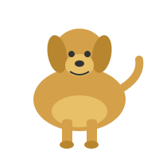
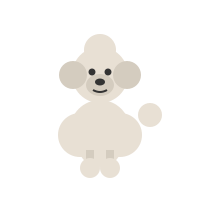

Beagle
Size: Small to medium, about 13–15 inches tall and 18–30 lb.
Personality: Curious, friendly, and gentle. Beagles love to follow scents and explore.
Everyday care: Needs a daily walk and a fenced yard. Brush weekly and clean the ears often.
Welcome! Explore our dog encyclopedia to learn about three popular breeds — their size, personality, and everyday care.
Size: Small to medium, about 13–15 inches tall and 18–30 lb.
Personality: Curious, friendly, and gentle. Beagles love to follow scents and explore.
Everyday care: Needs a daily walk and a fenced yard. Brush weekly and clean the ears often.

Size: Medium to large, about 21–24 inches tall and 55–75 lb.
Personality: Loyal, eager to please, and great with families. Very playful and patient.
Everyday care: Needs plenty of exercise and regular brushing to manage shedding.

Size: Comes in Toy, Miniature, and Standard. Standard is about 15 inches and 40–70 lb.
Personality: Smart, active, and alert. Poodles learn tricks quickly and enjoy mental games.
Everyday care: Needs professional grooming every 4–6 weeks and daily mental activity.